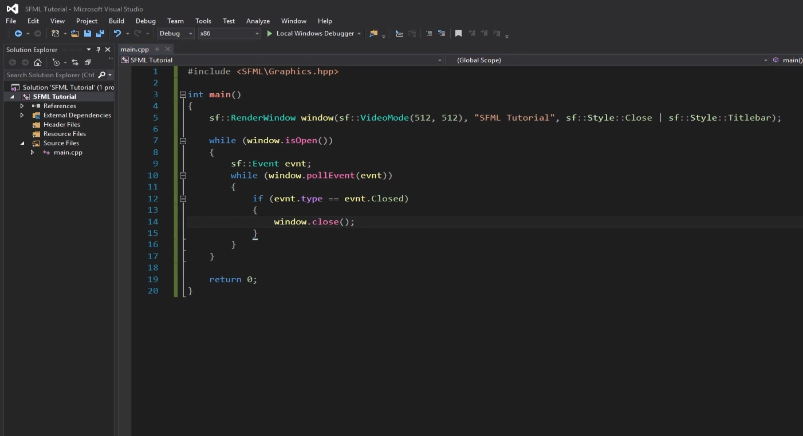
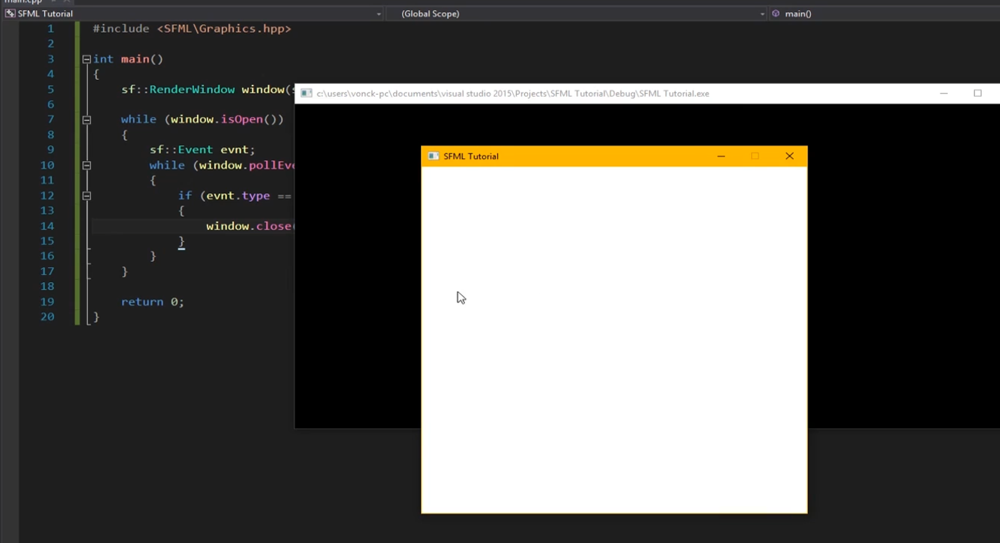
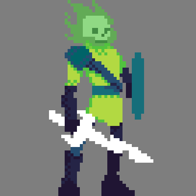
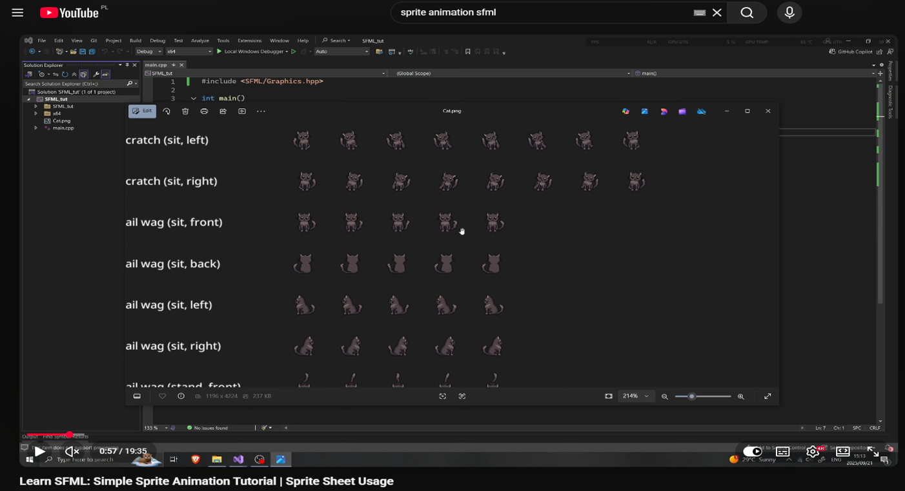
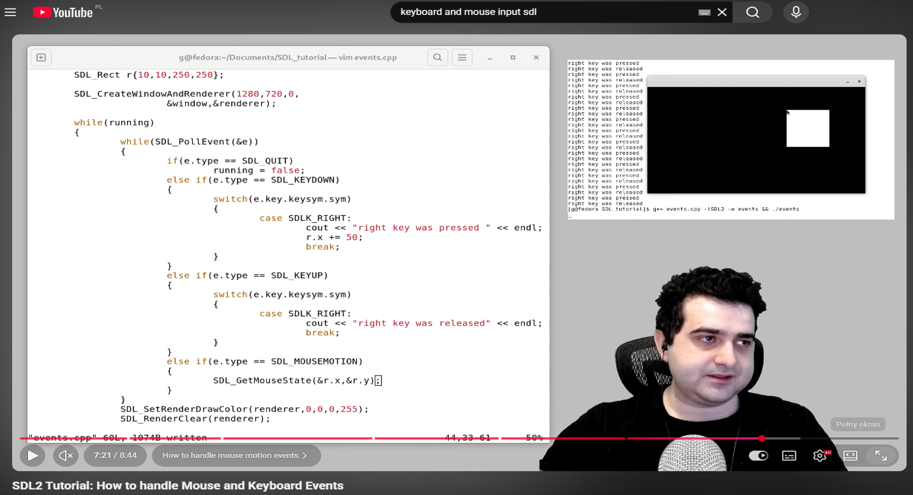
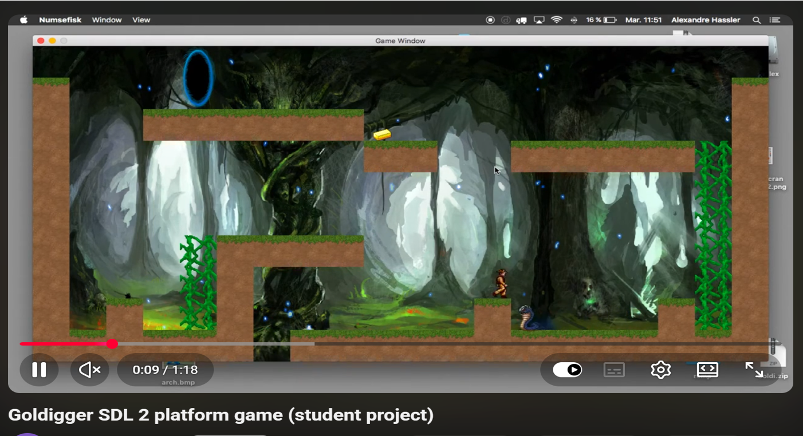
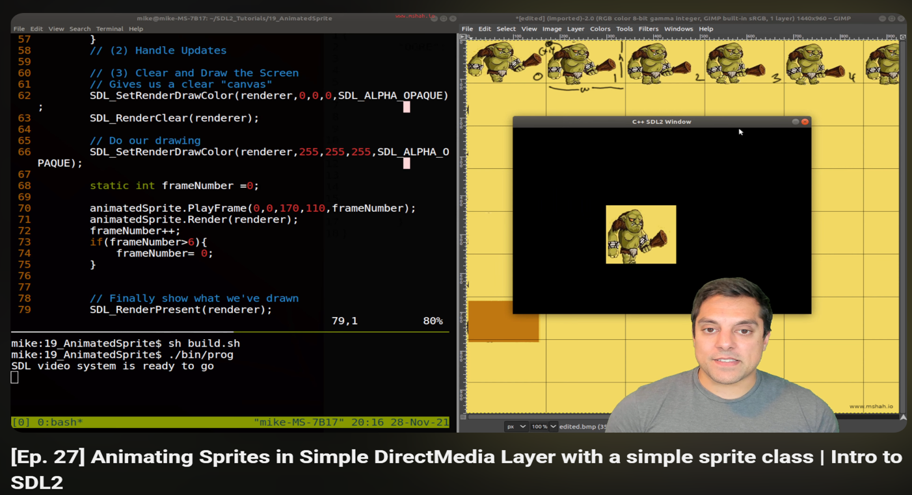
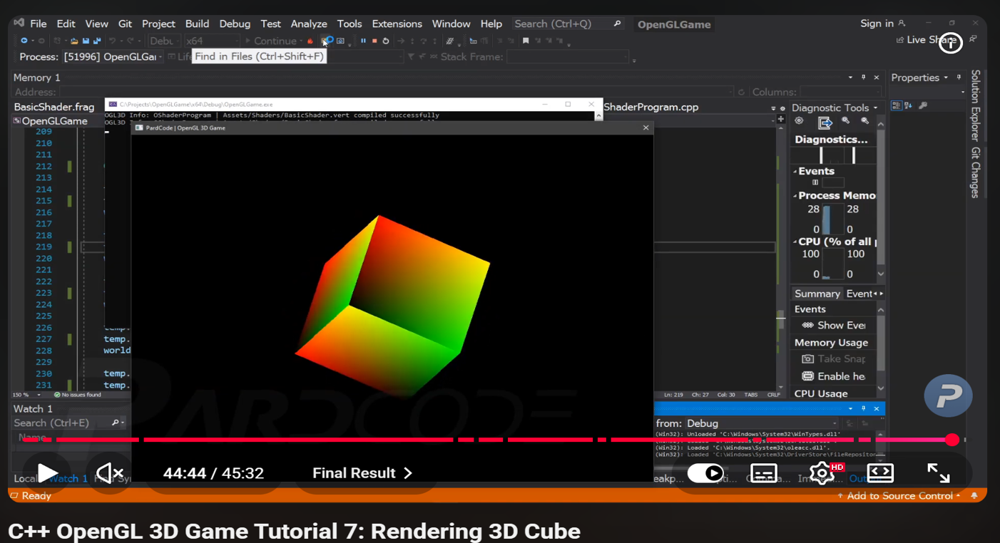
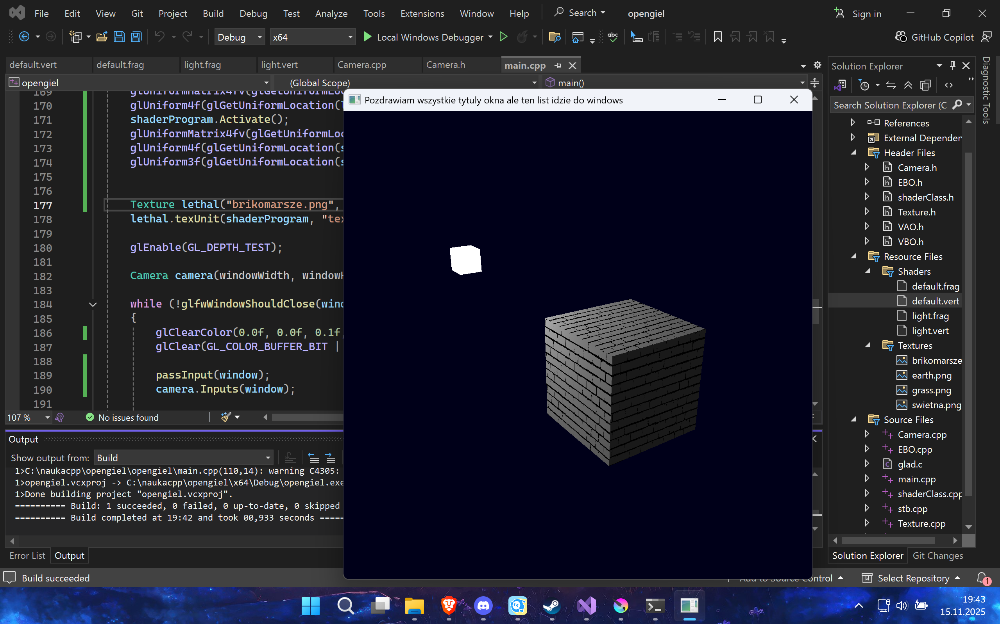
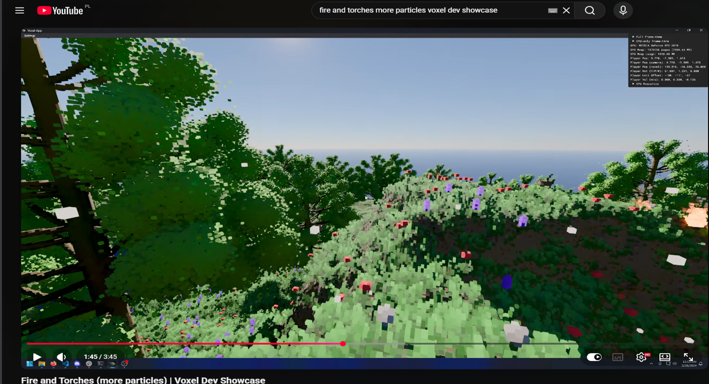

Spis treści
Możliwości Bibliotek Graficznych
Grafika w C++ daje ogromne możliwości wizualne dzięki różnym bibliotekom. Każda z nich pozwala tworzyć inne typy projektów - od prostych aplikacji 2D po zaawansowane sceny 3D.
Poniżej znajdują się przykłady możliwości najpopularniejszych bibliotek.
Rozdział 1
SFML - grafika 2D i prostota
Możliwości:
- Rysowanie figur (prostokąty, koła)
- Obsługa obrazów i sprite’ów
- Proste animacje
- Tworzenie okna aplikacji
Przykłady:
- Okno aplikacji
- Prosta gra 2D (3:40)
- Animacja sprite’a




Rozdział 2
SDL - większa kontrola
Możliwości oraz przykłady:
- Bezpośrednia obsługa wejścia (klawiatura, mysz)
- Prosta gra platformowa
- Proste animacje
- Praca na niskim poziomie



SDL pozwala programiście mieć dużą kontrolę nad tym, co dzieje się „pod spodem”, bez ukrywania szczegółów działania systemu i grafiki. SDL nie robi wszystkiego za programistę — zamiast tego daje narzędzia, dzięki którym można samodzielnie kontrolować działanie programu. Dzięki temu jest bardziej elastyczny, ale wymaga większej wiedzy niż prostsze biblioteki.
Rozdział 3
OpenGL - grafika 3D
Możliwości:
- Modele 3D
- Oświetlenie
- Tekstury
- Kamery
Przykłady:
- Sześcian 3D
- Scena z oświetleniem z teksturowanym obiektem (Mojego wykonania)


Rozdział 4
Vulkan - wydajność i zaawansowanie
Możliwości:
- Bardzo wydajny rendering
- Zaawansowane efekty graficzne
- Kontrola nad pamięcią GPU
Przykłady:
- Realistyczna scena, Zaawansowane cienie oraz Rendering w wysokiej jakości
